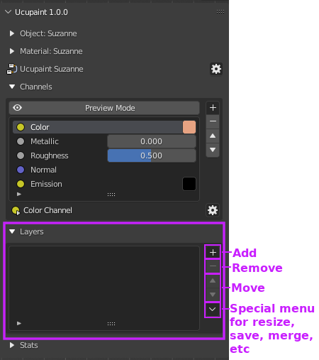
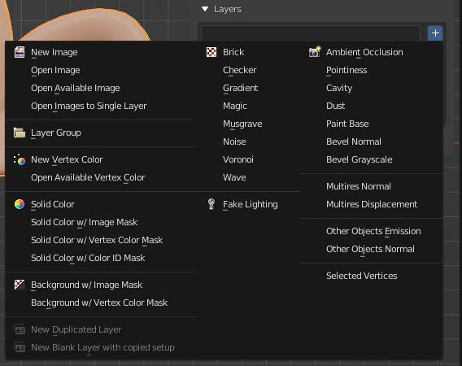
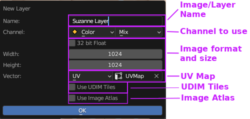
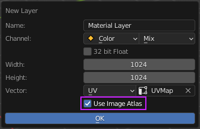
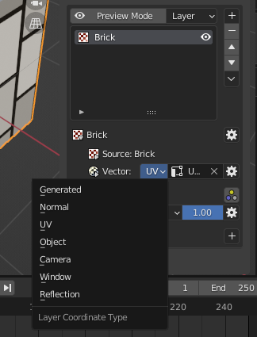
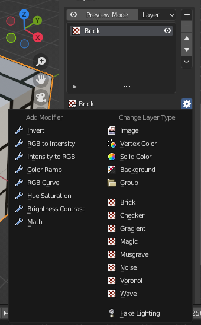

Layer
You can access layers in the layers panel.
|  |
|---|
| Layers list panel |
Creating New Layer (Quick Guide)
You can create new layers by pressing the '+' button, there are various layer types that can help you finish your texturing process.
|  |
|---|
| New layer options |
Let's try to use the "image" type. With this layer type, we can draw textures like usual. FYI, All images generated by Ucupaint will automatically be packed when you save your blend file. You'll be given these options.
|  |
|---|
| New image layer dialog box |
Those options are mostly obvious except for image atlas, more details about image atlas can be found here. Once you're happy with the settings, just click ok. Now you have one image layer available to paint on.
| Painting on an image layer |
The layers feature works like a layer in any other image editing software. So if we create another layer and draw over it, it will cover the layer below.
| Multiple image layers |
Note
Next Quick Guide is about how layers and channels are related, click here to continue
Layer Types
There are several layer types that can be used in Ucupaint:
Image
You can create a new image or open an image as a layer.
Image Atlas
When your create new image using Ucupaint, it will give you the option to use an image atlas.
|  |
|---|
| Image atlas checkbox on new image layer options |
If you turn on Image Atlas, the newly created layer will use portion of a larger image. Since Blender materials have limited number of images that can be used in a material (8-16 depending on your system), image atlas will use a special image that can be used as several layers or masks at the same time. This system works automatically, so you don't have to worry about it.
Vertex Color
Vertex color can be used as a layer. There's also special vertex color editor in edit mode.
| Vertex color editor on edit mode |
Solid Color
Solid Color layer contains only single color, can be useful if you want to paint the mask first then edit the solid color later.
| Solid color layer |
Background
Backgound will use your base color & alpha settings as layer, it can be useful to create holes on the surface.
Fake Lighting
Fake lighting will calculate fake lighting based on a given vector and matrix. If you're using camera space, it can be used for fresnel effect. Be aware if you're using camera space, the baked channel will be static.
Group
Group layer can combine several layers into one layer and add a mask or a modifier on top of it. This can be really slow if you're using many layers and channels at the same time.
Blender Generated Textures
You can use Blender's generated textures as a layer, for example Noise, Magic, Brick, Voronoi, etc.
Baked Images
You can use a baked texture as a layer, for example AO, Cavity, Bevel. Be aware that the baking process may take a while to finish depending on your system and settings.
Layer Parameters And Options
Layer Vector
By default, a layer will use a UVMap as vector input, but you can change it to another vector type like Generated.
|  |
|---|
| Types of layer vector |
Be aware that if you're using a dynamic vector like camera or window, the baked channel textures will still be static.
Transformation Vector
You can transform your vector using this UI.
| Vector transformation options |
Be aware you can't transform image atlas layer in this way since it shares image with other layers/masks.
Change layer type
You can change the layer type to a different one and retain it's mask and modifier settings. Use this button to change the layer type.
|  |
|---|
| Change layer type options |